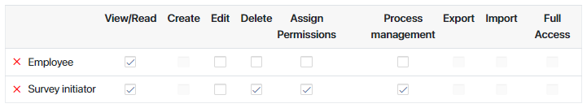
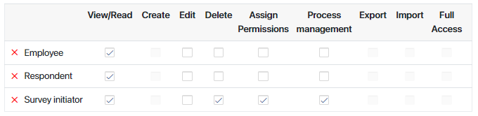
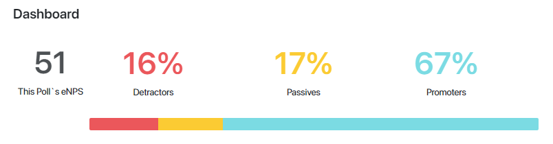
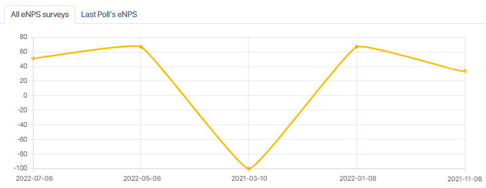
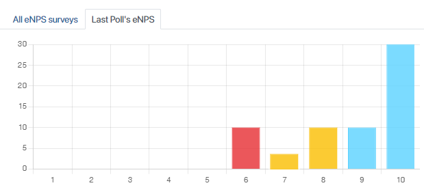
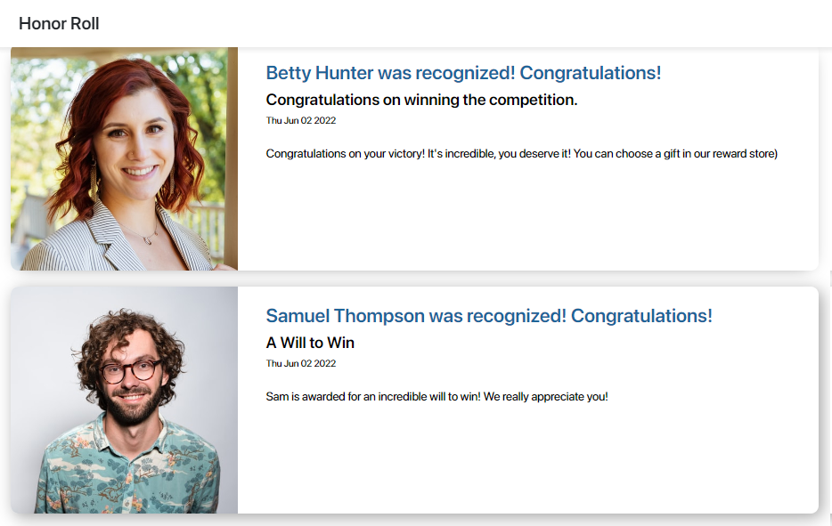
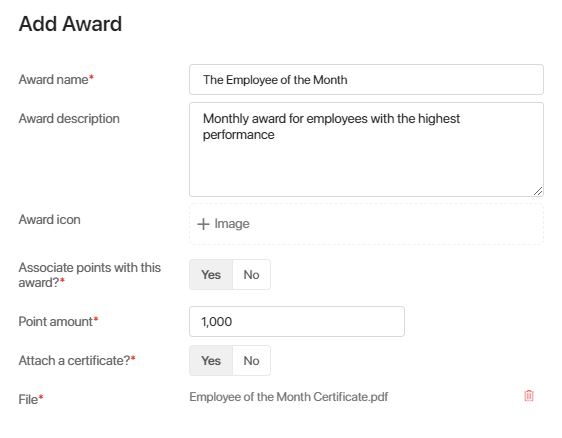

The Employee Engagement solution is designed to monitor employee engagement, evaluate and increase loyalty, and improve the company culture.
This solution is used for two purposes:
- Conducting surveys within the company. You can carry out three kinds of surveys (pulse surveys, eNPS surveys, and 360-degree feedback surveys). Analyze the results and use them to improve employee engagement.
- Expressing appreciation to employees. You can publicly recognize employees for their achievements or contributions and let them choose rewards for continuous good performance, improving their motivation.
Initial setup of the solution
- Import the solution from the BRIX Store catalog or upload the .e365 file to the system.
- During the import you will be prompted to select users for the HR group configured in the workspace. Only Administrators and users included in the HR group can add Rewards to the Reward Store Warehouse app. The HR group is also responsible for giving out gifts that employees claim in the Reward Store.
If you don’t select users for the group right away, you can do it later: click the gear icon next to the workspace’s name, select Groups, and edit the group.
- Configure access settings for the Employee Responses app. To do that, open the Employee Responses app, click the gear icon next to its name in the menu, and select Access Settings. Click the +Add button, select App property, and choose Employee in the drop-down menu on the right. Click Save. In the same way, add the Survey initiator. Then deselect some checkboxes so that the settings look as follows:

When you finish, click Save.
- Configure access settings for the Feedback Reports app. Open the app’s Access Settings and add the Employee, Respondent, and Survey initiator app properties to the list the same way as described above. Then deselect checkboxes to configure access settings as follows:

When you finish, click Save.
- Add Rewards that employees will be able to get for their Employee Score points to the Reward Store Warehouse. They will be displayed in the Reward Store.
Additional setup
- Add questions to the Library of Questions app. They will be used in surveys you create. If you don’t do it beforehand, you will be able to add questions as you create surveys.
- Add Awards that high-performing employees will receive during the Employee Recognition process. If you don’t do it beforehand, you will be able to add new Awards as you recognize employees.
- Create Employee Score profiles for the company’s employees. These profiles will save information about Employee Score points. If you don’t do it beforehand, you will be able to add Employee Score profiles as you recognize employees.
Apps and business processes
Dashboard
The Dashboard page illustrates the results of eNPS Surveys and shows all surveys conducted in the last 30 days.
At the top of the page, you can see This Poll’s eNPS and the percentages of Detractors, Passives, and Promoters.
You can see a bar that visualizes these percentages. The red part of the bar shows detractors, the yellow one shows passives, and the blue one shows promoters.

Below the bar, you can see the eNPS graphs. You can switch between two tabs. On the All eNPS surveys tab, you can see the line graph showing how eNPS changed over time with the most recent results on the left.

On the Last Poll’s eNPS tab, you can see a bar graph showing how many employees selected a certain number on the scale during the lase eNPS survey. The bars that show detractors are red, the ones that show passives are yellow, and the ones for promoters are blue.

Below the graph you can find a list of surveys carried out in the last 30 days. If you want to view a survey’s page, click on its name.
Employee Pulse Survey
The Employee Pulse Survey app is used to quickly assess employee engagement using short surveys. It is associated with the Employee Pulse Survey, Giving Anonymous Response, and Giving Response business processes. Read more about conducting Pulse surveys in this article.
eNPS Survey
The eNPS Survey app is designed to conduct short, usually one-question surveys to evaluate employee satisfaction and loyalty. It is associated with the eNPS Survey, Giving Anonymous Response, and Giving Response business processes. Read more about conducting eNPS Surveys in this article.
360-Degree Feedback
The 360-Degree Feedback app allows an employee to request feedback both from their superior and their coworkers. It also helps a manager request feedback about their team member’s performance. The app is associated with the Request feedback, Giving Anonymous Feedback, and Giving Feedback business processes. Read more about requesting 360-Degree Feedback in this article.
Library of Questions
The Library of Questions stores questions that you can use to make surveys. The app’s page shows a list of questions created in the company and their subjects. You can add questions tailored to your company that will be later used in your surveys.
You don’t have to add all questions beforehand, as you will be able to create new ones when you create surveys.
To add a question, open the Library of Questions app, click +Question in the upper right corner of the page, select the Subject of the question from the list, and enter the Question. Click Save. The question you created will appear in the Library of Questions app and become available to use in surveys within this solution.
Employee Recognition
The Employee Recognition app helps to show appreciation to employees by praising them publicly and giving them awards. This app is associated with the Employee Recognition business process. Read more about expressing recognition to employees in this article.
Honor Roll
The Honor Roll page shows entries on employees who have been recognized in the Employee Recognition process.
Each entry includes the employee’s profile picture. The employee’s name is specified in the header. Below the header, you can see the Award the employee got, the date it was given, and the text added by the user who created the entry.

Awards
The Awards app is designed to manage and store information about awards, prizes, bonuses, or nominations that an employee can receive as a result of the Employee Recognition process. With some awards employees receive Employee Score points that they can spend in the Reward Store.
To create a new Award, click the +Award button and fill out the form:

- Award name*. Enter the award’s name (for example, Sales Person of the Month Award).
- Award description. Describe the award (for example, what it is given for).
- Award icon. Attach a small image. It will be displayed on the Award’s page.
- Associate points with this award?* If an employee gains points that are added to the Employee Score upon receiving this award, select Yes. The Point Amount* field will appear.
- Point amount*. Specify how many points the employee will get.
- Attach a certificate?*. If you want to attach an acknowledgement certificate to the award, select Yes. The File* field will appear.
- File*. Attach the certificate file.
After completing the form, click Save. The Award you created will be saved in the corresponding app.
Reward Store
The Reward Store page includes gifts and gift certificates that employees can receive for Employee Score points. Read more about claiming and giving out gifts in this article.
Employee Score
The Employee Score app stores information about points that employees receive during the Employee recognition process. Employees can use these points in the Reward Store in order to claim gifts for good performance.
By default, employees can see only their own profiles and scores on the app’s page. Users included in the HR group and Administrators can see all Employee Score profiles.
To create an Employee Score profile for a user, click the +Employee Score button, select a user in the Employee field and click Save. The profile will be added to the app. It will be used in the Employee Recognition process.
Employee Responses
The Employee Responses app stores all employees’ responses to non-anonymous Employee Pulse Surveys and eNPS Surveys carried out in the company.
The app’s page shows a list of responses. With the default settings, users can view their own responses, and the employee who initiated a survey can view all responses to this survey, delete them, and change access permissions to them.
In each row, you can see the employee’s name and name of the survey they were taking, as well as the date and time of the response. Click a response in the list to see the question or questions the survey included and the employee’s answers, as well as links to the employee and the survey.
Feedback Reports
The Feedback Reports app stores all non-anonymous feedback given in 360-Degree Feedback surveys.
The Feedback Reports app page shows a list of feedback reports. With the default settings, users have access to their own responses and to feedback that they requested. The employee who created a 360‑Degree Feedback survey can also grant other users access to certain responses as needed.
On the app’s page, you can see the name of the employee feedback is given to and the name of the employee who gave feedback, as well as the date and time the response was sent. Click a report in the list to see the question or questions the feedback request included and the employee’s answers, as well as links to the employee whose performance was evaluated, the employee who gave feedback, and the original survey.
Reward Store Warehouse
The Reward Store Warehouse app is designed for the HR department to manage and keep records on gifts and gift certificates that employees will be able to get for their Employee Score points. The app is associated with the Give out a gift business process.
Only users included in the HR group in the workspace or in the Administrators system group can add new Rewards. To add a new Reward, open the Reward Store Warehouse app, click the +Reward button, and fill out the form:
- Type of reward*. Select the reward’s type: Gift or Gift certificate. If you select Gift certificate, the Denomination* field will appear.
- Denomination*. Enter the certificate’s value.
- Product*. Enter the name of the gift or certificate.
- Product description, terms and conditions*. Describe the gift and specify additional terms if needed.
- Points required*. Enter the number of Employee Score points an employee needs to spend in order to receive this gift or gift certificate.
- Image. Upload an image that shows the gift.
- Amount*. Specify how many of these gifts or gift certificates the company has in stock.
When you save the Reward, it will become available to all employees in the Reward Store.
Found a typo? Select it and press Ctrl+Enter to send us feedback